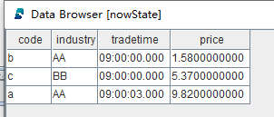

有状态算子
有状态算子介绍
有状态算子用于有状态计算，是指在一个计算过程中，其输出不仅依赖于输入，还依赖于先前的状态或历史记录。
有状态算子往往会在处理完当前输入后，更新内部状态，并将其用于下一次的计算。所以，同样的输入在不同的状态下可能会产生不同的输出。

DolphinDB 内置的有状态算子
DolphinDB 内置了超过 1600 个函数，尤其是提供了丰富的计算函数，方便用户低代码实现复杂的数据分析和金融量化因子计算。内置的窗口计算函数、序列相关函数等都可作为有状态算子用于流数据的有状态计算：
-
累计窗口函数：cumavg, cumsum, cumprod, cumcount, cummin, cummax, cumvar, cumvarp, cumstd, cumstdp, cumcorr, cumcovar, cumbeta, cumwsum, cumwavg, cumfirstNot, cumlastNot, cummed, cumpercentile, cumnunique, cumPositiveStreak
-
滑动窗口函数：ema, mavg, msum, mcount, mprod, mvar, mvarp, mstd, mstdp, mskew, mkurtosis, mmin, mmax, mimin, mimax, mmed, mpercentile, mrank, mcorr, mcovar, mbeta, mwsum, mwavg, mmad, mfirst, mlast, mslr, tmove, tmfirst, tmlast, tmsum, tmavg, tmcount, tmvar, tmvarp, tmstd, tmstdp, tmprod, tmskew, tmkurtosis, tmmin, tmmax, tmmed, tmpercentile, tmrank, tmcovar, tmbeta, tmcorr, tmwavg, tmwsum, sma, wma, dema, tema, trima, linearTimeTrend, talib, t3, ma, mmaxPositiveStreak, movingWindowData, tmovingWindowData
-
序列相关函数：deltas, ratios, ffill, move, prev, iterate, ewmMean, ewmVar, ewmStd, ewmCov, ewmCorr, prevState, percentChange
-
topN相关函数：msumTopN, mavgTopN, mstdpTopN, mstdTopN, mvarpTopN, mvarTopN, mcorrTopN, mbetaTopN, mcovarTopN, mwsumTopN
-
高阶函数：segmentby (参数 func 暂支持 cumsum, cummax, cummin, cumcount, cumavg, cumstd, cumvar, cumstdp, cumvarp), moving, tmoving, accumulate, window, talib
-
其他函数：talibNull, dynamicGroupCumsum, dynamicGroupCumcount, topRange, lowRange, trueRange
-
特殊函数（仅支持在响应式状态引擎中使用）：stateIterate, conditionalIterate, genericStateIterate, genericTStateIterate
有状态算子应用例子1-横截面引擎
顾名思义，横截面引擎是专门用于截面数据处理时的流计算引擎。
横截面引擎内部维护了一张键值表作为截面数据表，每一次的计算都是基于这张键值表进行的。
本用例以股票行情数据为例，处理逻辑是每批数据输入后会根据每只股票的最新价格计算每个行业的最新平均价格。
step1：创建发布流数据表
colNames = ["code", "industry", "tradetime", "price"] colTypes = [SYMBOL, SYMBOL, TIME, DOUBLE] share(table=streamTable(1:0, colNames, colTypes), sharedName="pubTable")
step2：创建存储处理后数据的共享流数据表
colNames = ["tradetime", "industry", "factor"] colTypes = [TIME, SYMBOL, DOUBLE] share(table=streamTable(1:0, colNames, colTypes), sharedName="result")
step3：创建横截面引擎
try{ dropStreamEngine("crossSectionalDemo") } catch(ex){ print(ex) }
createCrossSectionalEngine( name="crossSectionalDemo",
metrics=[<avg(price)>],
dummyTable=pubTable,
outputTable=result,
keyColumn="code",
triggeringPattern="perBatch",
useSystemTime=false,
timeColumn="tradetime",
contextByColumn="industry")横截面引擎的具体使用方法可以参考横截面引擎章节，此处直接展示具体应用场景的示例代码。
step4：订阅发布流数据表
subscribeTable(tableName="pubTable", actionName="crossSectionalDemo", offset=-1, handler=getStreamEngine("crossSectionalDemo"), msgAsTable=true, batchSize=2000, throttle=0.01, reconnect=true)
step5：模拟批量数据写入
code = ["a", "b", "c", "a"] industry = ["AA", "AA", "BB", "AA"] tradetime = take(09:00:00.000, 3).append!(09:00:03.000) price = [9.99, 1.58, 5.37, 9.82] simulateData = table(code, industry, tradetime, price) tableInsert(pubTable, simulateData)
step6：查询结果表数据
res = select * from result
返回结果 res：
对比原始数据转换到按行业分组处理的截面计算结果：
step7：查询横截面引擎内部的最新状态
nowState = select * from getStreamEngine("crossSectionalDemo")返回结果 nowState：
可以看到，横截面引擎的最新状态是以 keyColumn 为主键的键值表，例子中 keyColumn=“code”，所以当第二条 code=“a” 的数据到来时，横截面引擎的状态更新，price 更新为 9.82。
step8：取消订阅
unsubscribeTable(tableName="pubTable", actionName="crossSectionalDemo")
step9：删除横截面引擎
dropStreamEngine(name="crossSectionalDemo")step10：删除发布流数据表和结果流数据表
注意：删除发布流数据表前，必须先把其所有订阅取消掉。
dropStreamTable(tableName="pubTable") dropStreamTable(tableName="result")
完整代码参考附录1。
附录
附录1：有状态算子应用例子1-横截面引擎完整代码
/** 有状态算子应用例子1-横截面引擎 DolphinDB Inc. DolphinDB server version: 2.00.10.9 2023.12.09 Storage engine: OLAP Last modification time: 2024.01.23 */ //清理环境 try{unsubscribeTable(tableName="pubTable", actionName="crossSectionalDemo")} catch(ex){print(ex)} try{dropStreamEngine(name="crossSectionalDemo")} catch(ex){print(ex)} try{dropStreamTable(tableName="pubTable")} catch(ex){print(ex)} try{dropStreamTable(tableName="result")} catch(ex){print(ex)} go //step1：创建发布流数据表 colNames = ["code", "industry", "tradetime", "price"] colTypes = [SYMBOL, SYMBOL, TIME, DOUBLE] share(table=streamTable(1:0, colNames, colTypes), sharedName="pubTable") //step2：创建存储处理后数据的共享流数据表 colNames = ["tradetime", "industry", "factor"] colTypes = [TIME, SYMBOL, DOUBLE] share(table=streamTable(1:0, colNames, colTypes), sharedName="result") go //step3：创建横截面引擎 createCrossSectionalEngine( name="crossSectionalDemo", metrics=[<avg(price)>], dummyTable=pubTable, outputTable=result, keyColumn="code", triggeringPattern="perBatch", useSystemTime=false, timeColumn="tradetime", contextByColumn="industry") go //step4：订阅发布流数据表 subscribeTable(tableName="pubTable", actionName="crossSectionalDemo", offset=-1, handler=getStreamEngine("crossSectionalDemo"), msgAsTable=true, batchSize=2000, throttle=0.01, reconnect=true) go //step5：模拟批量数据写入 code = ["a", "b", "c", "a"] industry = ["AA", "AA", "BB", "AA"] tradetime = take(09:00:00.000, 3).append!(09:00:03.000) price = [9.99, 1.58, 5.37, 9.82] simulateData = table(code, industry, tradetime, price) tableInsert(pubTable, simulateData) /* //step6：查询结果表数据 res = select * from result //step7：查询横截面引擎内部的最新状态 nowState = select * from getStreamEngine("crossSectionalDemo") //step8：取消订阅 unsubscribeTable(tableName="pubTable", actionName="crossSectionalDemo") //step9：删除横截面引擎 dropStreamEngine(name="crossSectionalDemo") //step10：删除发布流数据表和结果流数据表 dropStreamTable(tableName="pubTable") dropStreamTable(tableName="result") */